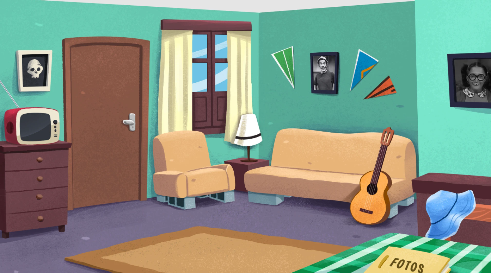
Como meu amor pelo seriado surgiu.
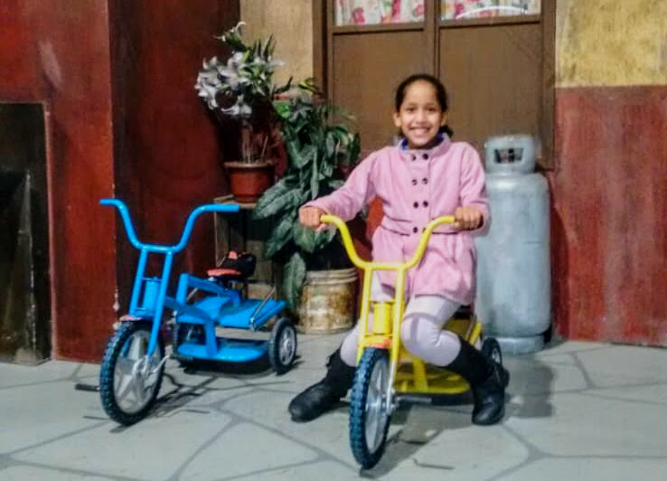
Minha paixão por Chaves vem desde a infância. Por volta dos meus cinco anos, eu já adorava assistir ao seriado, e aquilo rapidamente se tornou um dos melhores momentos do meu dia. Lembro-me de ficar empolgada assistindo, rindo e compartilhando esses momentos com meu avô, que sempre gostou do programa e fazia questão de ligá-lo para vermos juntos.
Com o passar do tempo, o seriado deixou de ser apenas um programa de TV e passou a fazer parte da minha vida. Eu adorava comentar sobre o assunto, repetir bordões e brincar com as amigas que também gostavam, criando um apego emocional enorme. Sempre que havia anúncio de alguma exposição, bonecos ou evento temático, eu pedia à minha família — que também sempre gostou — para me levar. Nunca vou esquecer da primeira vez que visitei uma exposição da Vila do Chaves com eles. Na mente de uma criança, era algo quase mágico e, ao mesmo tempo, um pouco bizarro: eu estava dentro do cenário da vila, nos lugares onde gravavam! Visitei a casa do Seu Madruga, os cantinhos da vila e tirei várias fotos.
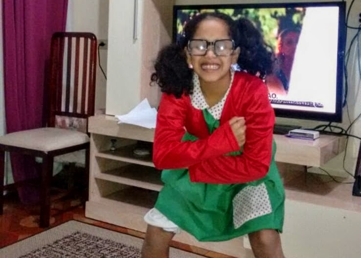
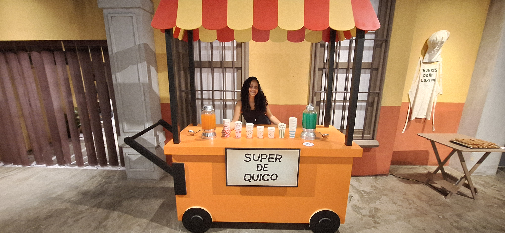
Com o passar dos anos, essa paixão tornou-se parte da minha identidade. Quem me conhece sabe: tudo relacionado a Chaves está conectado a mim. Tornou-se rotina deixar o seriado de fundo enquanto faço outras atividades. Mesmo conhecendo todos os episódios e falas, o programa continua fazendo-me rir. É difícil explicar, mas parece fazer parte de quem sou. Chaves ocupa um lugar especial no meu coração, e, mesmo com o tempo, continuo desejando objetos e referências do seriado — se pudesse, teria o quarto inteiro decorado com eles.
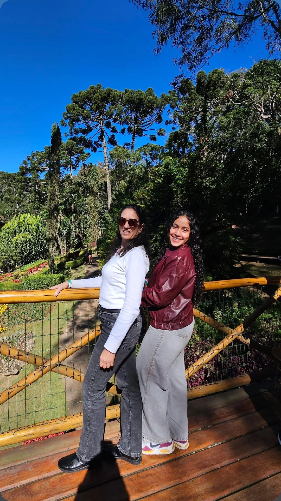
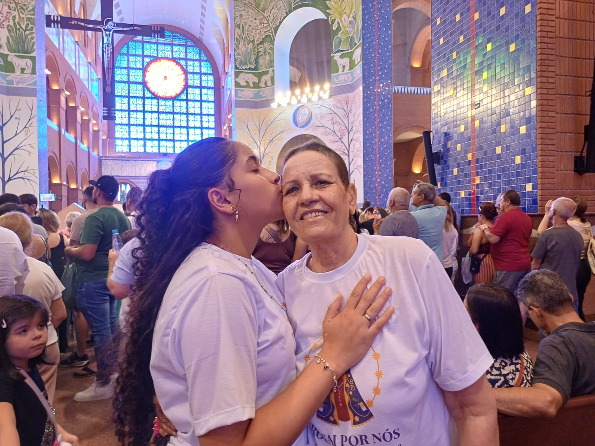
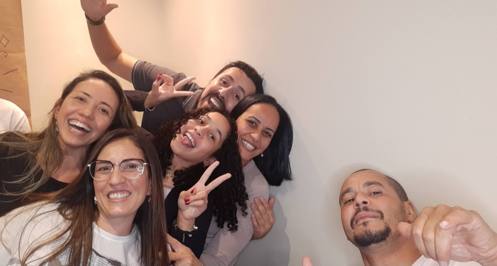
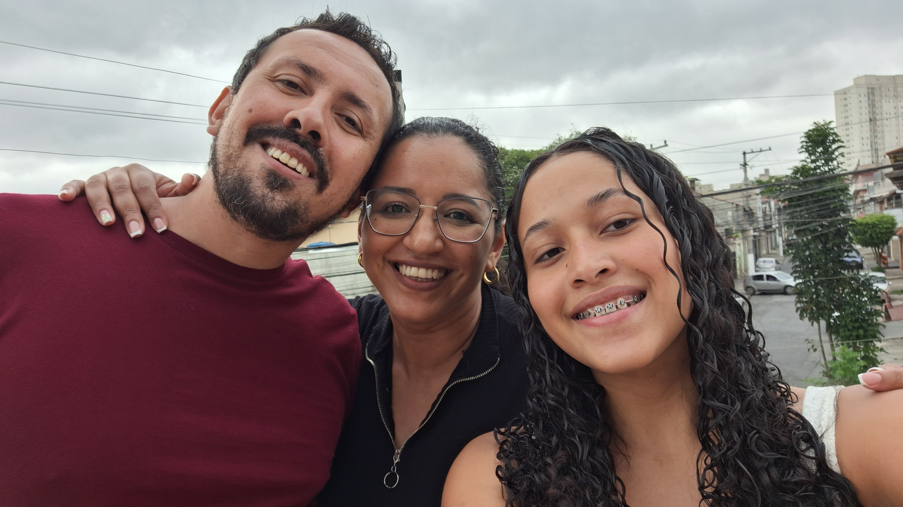
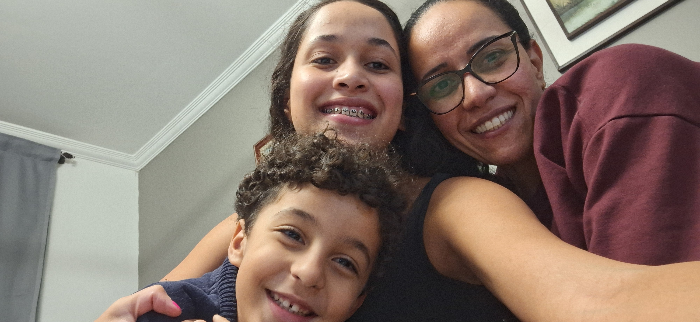
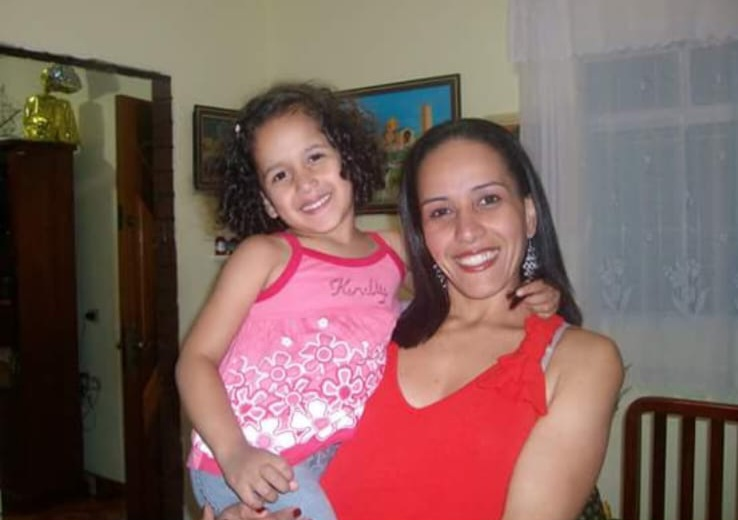
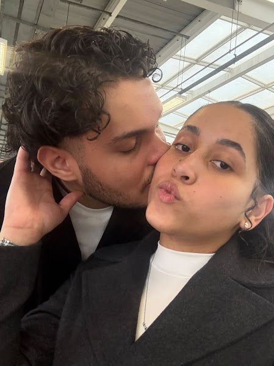
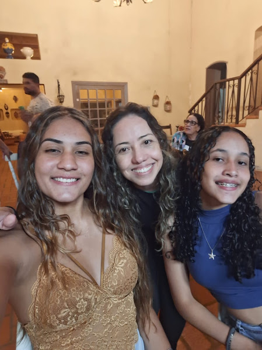
Minha família é minha maior base para seguir e persistir em cada passo da minha jornada. Quando o caminho parece difícil ou o cansaço aparece, encontro força no apoio, no carinho e nas palavras deles. Sou imensamente grata por ter pessoas ao meu lado que acreditam nos meus sonhos, comemoram cada vitória e me amparam quando necessário. Somos muito unidos, e essa conexão me dá coragem para enfrentar desafios. São pessoas que amo profundamente e sem as quais nenhuma conquista teria o mesmo significado.